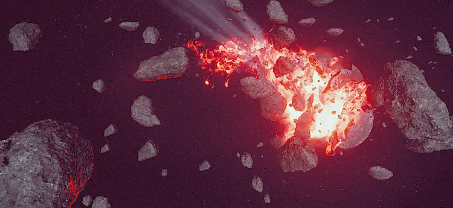

Fractured 行星
Fractured Planet

基本信息 信息
阵营
超级地球
Planets
Angel's Venture, Moradesh and Ivis
描述
被默里迪恩奇点摧毁的星球残骸。它庄严地提醒着我们，暴政必将带来毁灭。
the Fractured 行星 is the 遗骸 of a 行星 after its collision with the Meridian Black Hole.
背景故事
This 条款 is a stub.
You can help by expanding it.
Instructions: Add all relevant dispatches and changes.
Instructions: Add all relevant dispatches and changes.
A Fractured 行星 is the shattered 遗骸 of what once was a thriving, bountiful 行星. The first 行星 to become fractured was Angel's Venture, in which it collided with the 默里迪恩奇点. Planets become fractured after being torn apart by the Meridian Singularity, caused by the 光能者 harvesting of Dark 能量 in an attempt the thrust the Singularity towards 超级地球.
Relevant Dispatches
PRIORITY ALERT
2185-02-12The Meridian Singularity has reached 致命 momentum. It can no longer be slowed down enough to avoid collision with ANGEL'S VENTURE. ANGEL'S VENTURE can no longer be saved.
MORADESH DESTROYED
2185-03-14Moradesh has been torn apart by the Meridian Singularity. Over 95% of its 级别 C or higher citizens were safely evacuated prior to the planets' 摧毁. In memoriam, 24-hour period of quiet reflection on the nature of 复仇 has been ordered by the Ministry of 人类.
IVIS DESTROYED
2185-04-04Ivis has been destroyed by the Meridian Singularity. The destroyed 行星 joins Moradesh and Angel's Venture amongst the 光能者's celestial murders. Efforts to slow the Singularity have worked, but too late to save Ivis. The 光能者 will face 正义 for their crimes.
琐事
- The Fractured 行星 is the third Galactic POI that could be travelled to on the 银河地图.
- The first was Meridian Black Hole prior to its movement across the 银河地图, and the second was the Democracy Space 车站 when it was under construction.